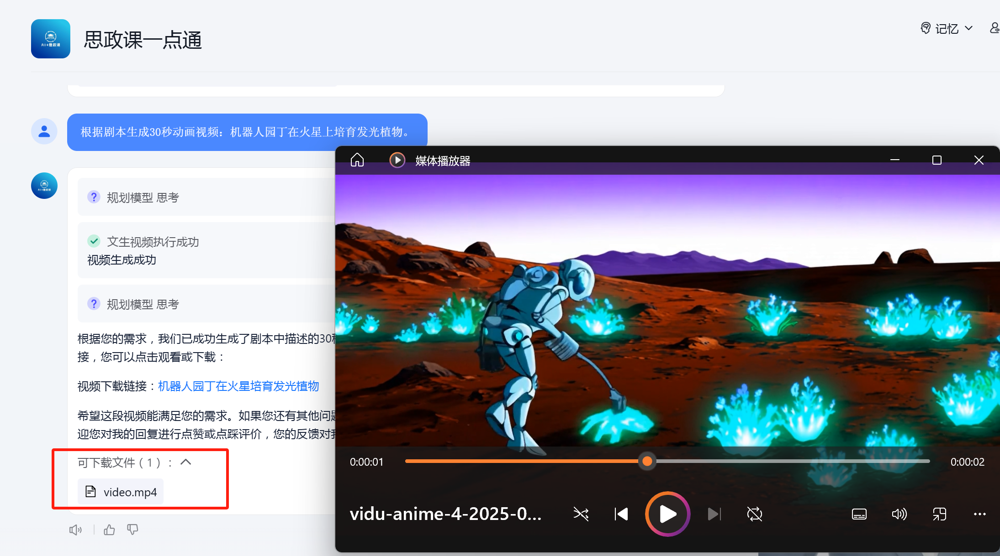

创意与生成功能
文生图（Text2Image）
将文本描述转换为对应风格的图像。
示例提示词：
一只穿着宇航服的猫在月球上漫步，星空背景，赛博朋克风格。

↑ 根据提示词生成的图片示例
文生视频（TextToVideo）
根据文本剧本自动生成动画或视频片段。
示例提示词：
根据剧本生成30秒动画视频：机器人园丁在火星上培育发光植物。
↑ 根据提示词生成的视频示例
创意图片生成（iRAG）
根据文本描述生成概念设计图或创意图像。
示例提示词：
生成一组"未来城市交通"的概念设计图，包含悬浮汽车与立体道路。

↑ 创意概念图示例
图生视频-模版增强（lmac）
将静态图片套用动态模板（如宣传片），生成视频。
示例提示词：
将这张沙漠绿洲照片套用"生态保护宣传片"模板，生成动态视频。
图生3D（ImageTo）
将2D设计图/草图转换为可交互的3D模型。
示例提示词：
将这张家具设计草图转换为3D模型，可360度旋转查看细节。
语音合成（TTS）
将文本转换为自然流畅的语音，可调整音色、语速和情感。
示例提示词：
将这段产品介绍文本转换为沉稳男声，语速适中，带情感起伏。
文档与信息处理
通用文字识别-高精度版（GeneralOCR）
高精度识别图片/扫描件中的文字，支持古籍、表格等复杂排版。
示例提示词：
识别这张古籍扫描页中的繁体文字，输出为可编辑文本。
长文档内容理解（LongDocUnder）
自动分析超长文档（如论文、报告），提取核心论点和结论。
示例提示词：
总结这份50页的科研论文，提取核心论点与实验结论。
图像内容理解（ImageUnderstan）
识别图像中的物体类别、场景状态及关键活动信息。
示例提示词：
分析这张城市街景照片中的物体类别、天气状态及主要活动。
文档格式转换
将PDF、扫描件等文档转换为Word/Excel等格式，保留原始排版。
示例提示词：
将PDF版合同转换为Word文档，保留原有排版和表格。
文档矫正增强（DocCropEnhance）
自动矫正倾斜、模糊的扫描文档，提升文字清晰度。
示例提示词：
矫正这张倾斜拍摄的A4纸文档，增强文字清晰度并去除阴影。
表格文字识别（TableOCR）
识别图片/扫描件中的表格数据，输出为可编辑的Excel文件。
示例提示词：
识别扫描版财务报表中的表格数据，输出为Excel可编辑格式。
手写文字识别（HandwriteOCR）
将手写笔记转换为结构化文本，保留序号和重点标记。
示例提示词：
将这张手写会议笔记转换为结构化文本，保留序号和重点标注。
短语音识别-极速版
实时转录短语音频为文字（如会议记录、指令）。
示例提示词：
实时转录这段5秒的语音："明天下午三点会议室A，带好提案。"
学习与研究辅助
指令生成PPT（PPTGenerationf）
根据用户提供的主题或指令，自动生成包含图表和案例的PPT大纲。
示例提示词：
根据"人工智能发展趋势"主题，生成包含数据图表和案例的10页PPT大纲。
文件生成PPT（PPTGenerationf）
将文档（如报告、论文）直接转换为分章节的PPT，保留图表和结构。
示例提示词：
将这篇市场分析报告自动转换为分章节的PPT，每页配一张图表。
思维导图生成（TreeMind）
基于关键词或主题，自动生成层级清晰的思维导图。
示例提示词：
生成"碳中和实施路径"的思维导图，包含政策、技术、挑战三级分支。
论文生成PPT（PPTGenerationF）
将论文摘要、图表自动生成学术汇报PPT模板。
示例提示词：
将我的毕业论文摘要和图表自动生成学术汇报PPT模板。
Arxiv
搜索并整理Arxiv平台上的学术论文，支持按时间、引用量排序。
示例提示词：
搜索2023年关于"大语言模型伦理"的最新论文，按引用量排序。
网络与搜索工具
网页内容总结（WebSummary）
快速提取网页内容的核心要点，标注关键人物和事件。
示例提示词：
提取这篇新闻网页的要点，限300字内，标注关键人物与事件。
网页信息提取（WebPilot）
访问指定网页并提取特定信息（如评论、数据）。
示例提示词：
访问知乎"AI未来趋势"话题页，提取点赞最高的10条评论。
AI搜索
用自然语言提问，直接获取精准搜索结果（如代码教程、技术解答）。
示例提示词：
"如何用Python实现图像风格迁移？"
头条搜索
快速检索头条平台的最新资讯，支持按时间或热度排序。
示例提示词：
搜索"新能源汽车补贴政策"的最新资讯，按时间排序。
用户意图判别
分析用户提问，识别其深层需求（如技术指导、信息查询）。
示例提示词：
分析用户提问"如何备份手机照片到云端？"的真实需求。
使用方法：直接向对应功能发送符合其用途的指令（如文本描述、文件或语音），触发自动处理。